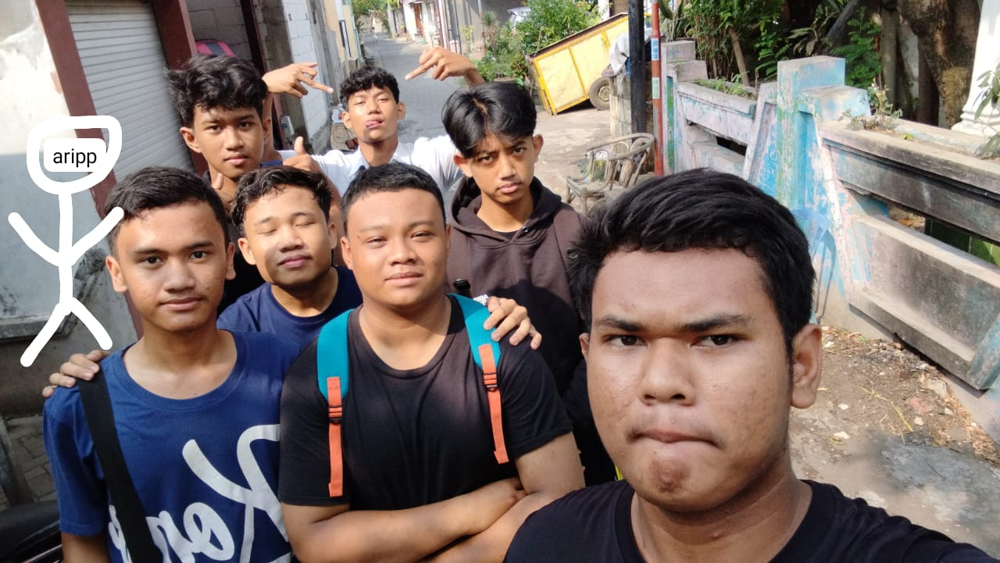

Kelompok Kikuk Kikuk
Dibentuk oleh M. Raihan Al Irsyad pada 21 November 2023, "Kikuk Kikuk🍑🍑" adalah wadah transformatif. Kami hadir untuk menumbuhkan fondasi kebersamaan yang kuat, memastikan setiap suara didengar melalui komunikasi yang efektif, dan secara kolektif mendorong setiap proyek menuju keberhasilan.
Anggota: M. Raihan Al Irsyad, Muhamad Rizki Firmansyah, Rizkyan Dwi Fahrizah, Muhammad Ariel Dwi Ardiansyah, Mishbahul Ma'arif Al Jaly, Muhammad Fathoni Firdaus, Muhammad Andreas Athallah Saifa Anam, Rasya Aautar Ramadhani.
8
Anggota Tim
2023
Tahun Berdiri
∞
Kebersamaan
